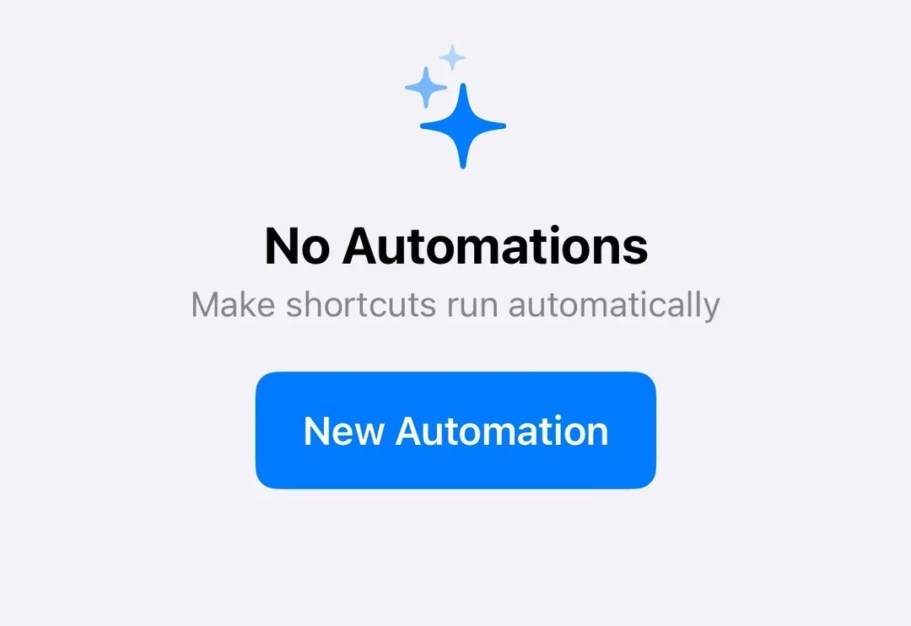
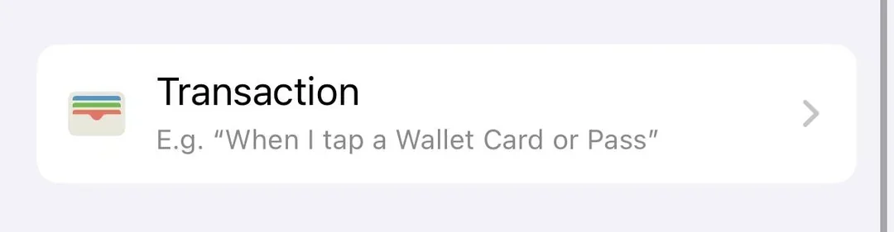
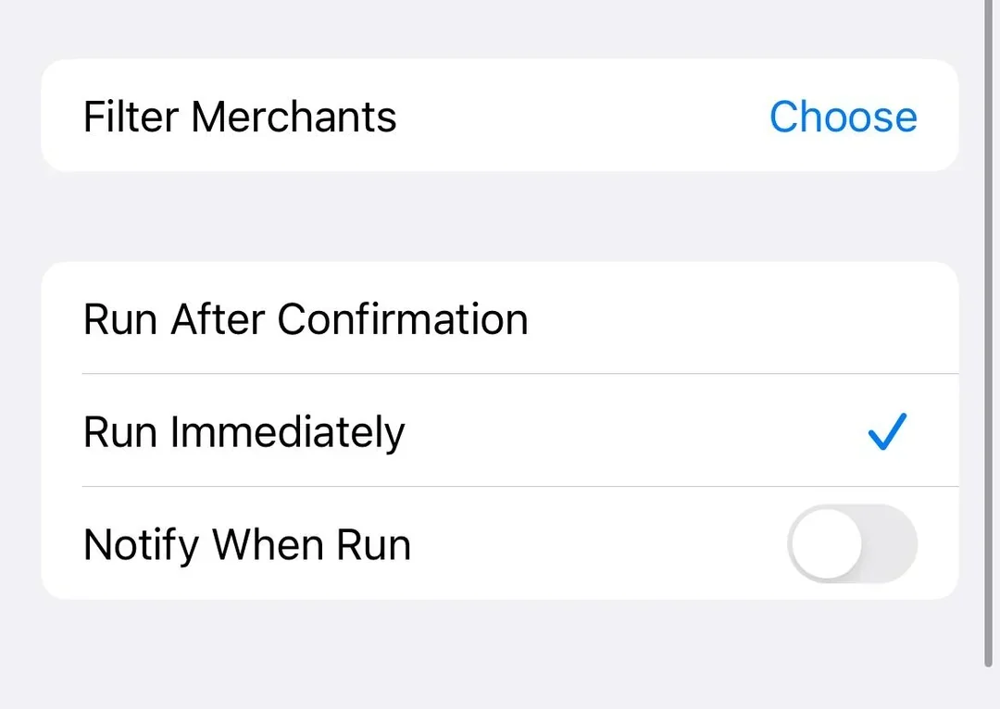
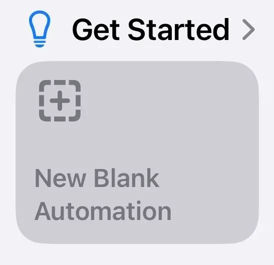
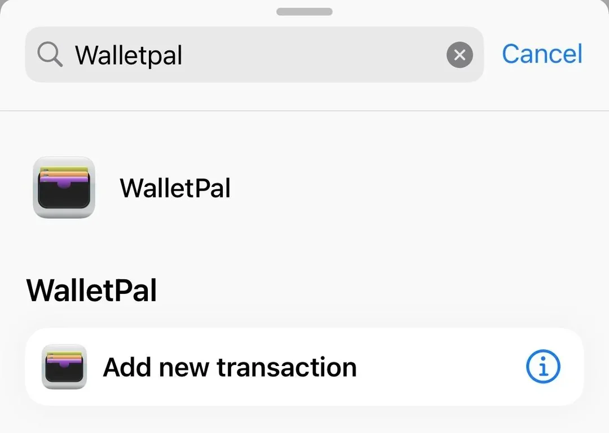
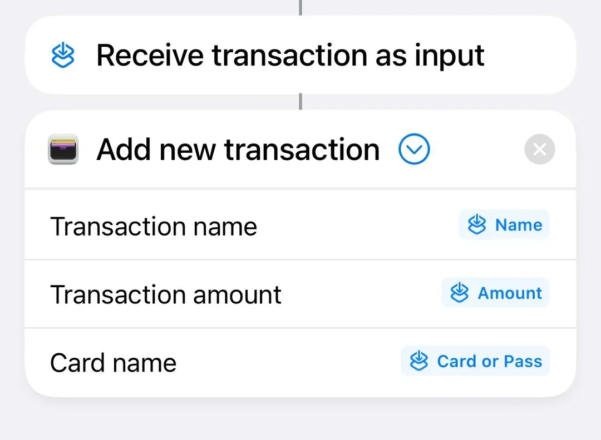

Open Shortcuts and choose Transaction
Open the Apple Shortcuts app, go to Automation, tap New Automation, then select Transaction from the list.


Apple Pay transaction automation guide
A clear step-by-step guide for creating an Apple Pay transaction automation in Shortcuts. It works with apps like Numbers or spreadsheets too, but this example uses WalletPal so you can automatically log spending without linking your bank account.
Step-by-step
Follow the steps in order. The screenshots use WalletPal, but the Transaction automation trigger is the same if you are sending Apple Pay transactions to another compatible app.
Open the Apple Shortcuts app, go to Automation, tap New Automation, then select Transaction from the list.


Choose the Wallet cards or passes you want WalletPal to track. If you use multiple cards for everyday spending, select each one you want included.
Choose Run Immediately so the automation can log expenses without asking for confirmation every time you pay.

Under Get Started, choose New Blank Automation, tap Add Action, then search for the app you want to use. In this example, search for WalletPal and select Add new transaction.


Connect the transaction name, amount and card name fields to the matching values from the Shortcut input. If you are using Numbers or a spreadsheet, this is where you choose which value goes into each column.

If you are using WalletPal, use the in-app setup test to create a test transaction and check for the expected notification. If you are using another app, make a small test entry and confirm the name, amount and card fields land in the right place.
Troubleshooting
These are the most common things to check if the automation does not run or the saved transaction looks wrong.
Make sure you are creating a personal automation in the Shortcuts app and that your iPhone supports Wallet transaction automations. On iOS 26, look for Wallet instead.
Edit the automation and choose Run Immediately. This lets it run without asking each time you use Apple Pay.
Open the app once, then return to Shortcuts and search for the app name again. If it still does not appear, check that the app supports Shortcuts actions.
Check the mapped fields. The name, amount and card should come from the Shortcut input values, not typed text or the wrong variable.
Check iPhone notification settings for your chosen app. WalletPal uses notifications to confirm new transactions and warn you about budgets.
Go back to the automation and review each mapped value. Once the fields are mapped correctly, future transactions should be cleaner.
FAQ
No. WalletPal is designed as an automatic expense tracker app for iOS that does not require bank linking.
It tracks the cards or passes you select in the Apple Pay transaction automation. You can update the automation if you add more cards later.
Yes. Manual entry is available for cash, bank transfers, online payments or anything else that does not come through the automation.
WalletPal adds the transaction to your spending, categories, budgets and notifications automatically.
Automatic expense tracker app for iPhone
Download WalletPal, set up Apple Pay transaction automation, and start tracking Apple Pay spending with less admin.